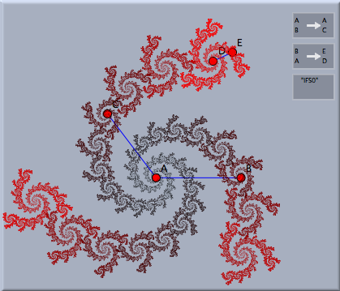
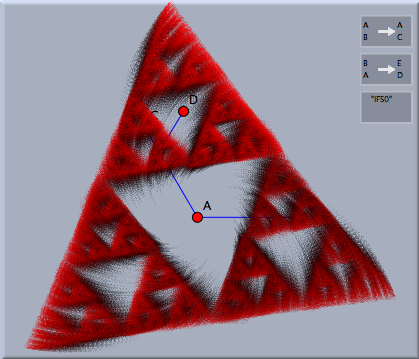
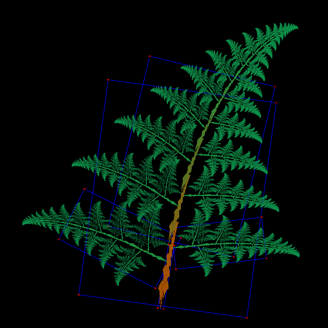
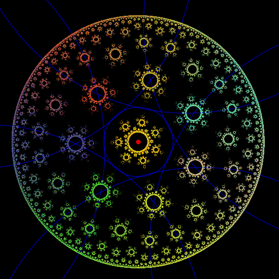
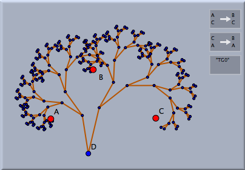
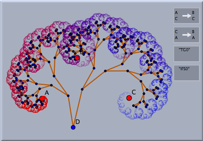

反復関数系(Iterated Function Systems)
反復関数系(IFS)を利用すると、シンデレラでフラクタルを作ることができます。 反復関数系は、いくつかの変換 T1, T2, T3,を必要とします。これらの変換から、つぎのようにして図形ができます。
まず、繰り返しの起点として、画面上の任意の点を選びます。次に、どれかの変換をランダムに選び、変換によって写った点を描きます。さらに、どれかの変換をランダムに選び、その写った点を変換します。この手続きを何度も繰り返します。こうして、画面上の「点の雲」が作られます。
反復関数系についての驚くべき事実は、この点の雲がすべての変換 T1, T2, T3, …による自己相似形だということです。
例として、次のような状況を考えます。まず２つの
相似変換 が定義されているとします。一つは点
A を自分自身に写し、点
B を点
Cに写します。すると、この変換は、点
A の周りにわずかに収縮しながら回転する変換を(この図の点
A,
B,
C の場合は)引き起こします。２番目の変換は、
A を
D に、
B を
E に写します。これも回転と収縮をしますが、中心と収縮率は異なります。この２つの変換によって定義された反復関数系は図のような結果になります。
反復関数系(IFS)を定義する
反復関数系を定義するためには、まずいくつかの変換を選びます。そのためには
動かすモードで、シフトキーを押しながら、望む変換のボタンをクリックしていきます。この方法で変換の組み合わせが選ばれます。次に、「モード」メニューの「特別」から「反復関数系(IFS)」を選びます。すると、「IFS」ボタンが追加されます。先ほどの点の雲の例では、２つの相似変換に対して自己相似形が生成されたのです。
反復関数系の機能を高める
ここまででは、反復関数系はそれほど強い印象を与えるものではないでしょう。その理由は、点の雲を生成する間、２つの変換が同じ割合でランダムに選ばれたということにあります。しかしながら、２番目の変換は第１の変換に比べてはるかに収縮率が高いので、２番目の変換の定点の近くに点がたまることになります。ユーザーは、インスペクタで変換の相対的な確率を調節することにより、変換の「重要性」を変えることができます。そのためには、動かすモード で、シフトキーを押しながらIFSボタンをクリックしてインスペクタを開きます。「表現方法」タブにそれぞれの変換に関係したスライダーと色のセレクタがあります。
スライダーはそれぞれの変換が選ばれる相対的な確率をコントロールします。色のコントロールは、点の雲の中でその変換に関係している色です。おおざっぱに言うと、ある変換をよく使って生成される点は、比較的その変換の色を持ちがちです。２番目の(収縮率の高い)変換の確率を下げると、先ほどの絵によい影響を与えます。最初の相似変換(
A周りの回転)がより「重要」になり、内部が螺旋で満たされるようになります。
もしも、マウスの動きに対する即時的な反応を必要としないならば、IFSの可視性を変えることによって、絵をより強調することができます。可視性を小さな値にすることにより、個々の点を高水準の透明度で表示されます。もし、十分に待つことができれば絵はサブピクセルレベルで絵が構成されるでしょう。
パラメータの変更
反復関数系(IFS) はとても豊かな構造物です。関係する点の位置次第で、IFSはシンデレラの同一の図形に対して、質的に非常に異なったものに見えるかも知れません。 次の図は、前の例のIFSに対して、２つの異なるパラメータを選択したものを示します。
 |
|
 |
| 異なるパラメータ |
異なる定義による変換は異なる（時々とても美しい）視覚効果を引き起こすかもしれません。次の図の中で、最初の例は４つの異なるアフィン変換によって作られました。２番目の図は８つの対称的に選ばれた円反転によって作られました。
 |
|
 |
| Bernsleyのシダ |
|
双曲フラクタル |
反復関数系と 変換群
反復関数系は、シンデレラの
変換群の概念と非常に密接な関係があります。変換群は変換の集まりで、幾何のオブジェクトに集めた変換を繰り返し適用するものです。反復関数系は、この反復過程の極限(存在するならば)と考えることができます。２つの相似変換が定義された次の例を考えましょう。最初の図は、変換を繰り返し適用したものを(マッピングの痕跡を示す線分とともに)示します。今、(動かすモードのシフト+クリックにより)単に変換群を選んでからIFSモードを選ぶことで、簡単に関連するIFSを作ることができます。 これにより、対応するIFSが自動的に作れます。結果として生じる絵が右側に示されています。
 |
|
 |
| 変換群と・・・ |
|
その反復関数系 |
注意
反復関数系の構造は、定義された変換の属性に大きく依存します。変換が「収縮」型でない場合は、通常理にかなった効果は見られません。その場合は無限の彼方に拡散してしまうからです。
次も参照してください
(磯部)